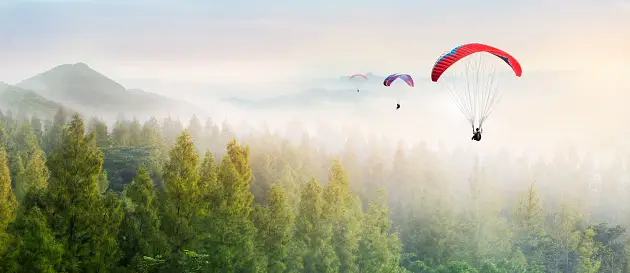

Fifteen Most-Sought Adventure destinations in India - The ultimate guide for all the thrill-seekers
Taking a vacation from the everyday grind is something that every one of us deserves, and we know you can't agree more! India itself offers so many amazing destinations to choose from that you are never short of places to go for a vacation. But travelling is incomplete without a sense of fun, no matter where you go. The highlight of any vacation is not just taking in the scenery or going on a shopping spree, but also experiencing some new kinds of experiences that will be cherished forever.
In order to spice up your vacation, there is nothing better than engaging in a variety of adrenaline-rushing activities. Blessed equally with a significant number of adventure destinations, there’s no end to thrills when you travel in India.
The vastness and variety of terrains, towering peaks and mountains, undulating rivers, natural marvels, wildlife sanctuaries and lush green forests make India an ideal destination for all adventure junkies. Across different geographic boundaries, India has gained a reputation as one of the hot spots of adventure sports, promising several enchanting experiences. Whenever you are up for a trip, make sure to squeeze in some time for adventure sports too as most of the Indian cities have the best thrilling activities to offer.
Be it paragliding in Bir-Billing, skiing in Auli, mountain biking in Leh or river rafting in Rishikesh, India certainly hosts some of the most thrilling adventure activities for all our daredevil friends.
On that note, we are here to bring before you the best activities to perform in the following adventure destinations in India.
Adventure destinations in India
If your idea of a vacation is partaking in adventurous activities, then your search ends here. Here is a detailed list of thrilling sports along with suggested places to perform there. So, go through this exciting list and satiate the adrenaline junkie that lies within you.
1. River rafting in Rishikesh, India
Do you like lazing and listening to the serene music of the Ganges or does the idea of adventure excites you to the core? If yes, then river rafting in Rishikesh is the thing for you. Taking you through the gushing waves of river Ganga, river rafting in Rishikesh is something that no adventure junkie can miss. The thrilling speed that one experiences while rafting coupled with the scintillating views of nature’s bounty that one gets to see, all add to the excitement of river rafting.
- Nearest airport to Rishikesh: Jolly Grant Airport
- Best time for river rafting in Rishikesh: March-May
2. Parasailing in Goa, India
The tropical beaches of Goa are a perfect destination to indulge in thrilling water activities, and parasailing is one of the most sought-after ones. Clear blue sky, sun-kissed beaches and turquoise blue water provide the perfect setting for performing parasailing in Goa. This adrenaline-rushing activity provides a bird's eye of Goa that is no less than a visual delight. Some of the beaches where you can experience the thrill of parasailing in Goa are Candolim beach, Baga beach, Colva beach, Majorda beach and a few more.
- Nearest airport to Goa: Goa International Airport
- Best time for parasailing in Goa: October-March
3. Scuba Diving in Andaman, India
Do you remember the iconic scene from Bollywood's hit, Zindagi Na Milegi Dobara, where Hritik Roshan enjoys scuba diving? Hazy pictures flashing in your mind? So, if you too want to experience the thrill of scuba diving then there’s no better place than the isolated beaches of Andaman.
Scuba diving is one of those water activities that offer the best views of marine life, and more than anything else lets one experience unlimited fun and adventure. Taking you through great depth, scuba diving is mostly performed in the Havelock Islands of Andaman.
- Nearest airport to Andaman: Port Blair Airport
- Best time for scuba diving in Andaman: October-May
4. Paragliding in Bir-Billing, India
Rightly called the paragliding capital of India, Bir-Billing remains jam-packed with adventure enthusiasts to engage in this one of a kind activity - paragliding. Bir-Billing is a quaint hamlet nestled in Himachal Pradesh that has over the years evolved as the most popular adventure destination in India.
Paragliding in Bir-Billing ranks second highest in the world which makes it all the more tempting for adventure lovers to perform paragliding here. Indulging in paragliding let's one glide over the mighty Dhualadhar ranges and soar to a maximum height of 8,200 ft. Offering the panoramic views of the hamlet, paragliding in Bir-Billing is a must for nature cum thrill lovers.
- Nearest airport to Bir-Billing: Kangra Airport
- Best time for paragliding in Bir-Billing: October-mid December
5. Skiing in Auli, India
Renowned all over as the skiing hub of India, Auli is the one-stop solution for giving an end to your quest for adventure. Tucked away in the foothills of the Himalayas, Auli’s ethereal beauty is way beyond description. Dotted with pine forests, oak trees and apple orchards, skiing in Auli has some of the best views to offer.
Winters redefines the charm of Auli to an even greater extent and the snowy slope here makes for a perfect spot for experiencing the thrill of skiing. So, what are you waiting for? Head to Auli to indulge in a skiing activity and admire the Himalayan beauty.
- Nearest airport to Auli: Jolly Grant Airport
- Best time for skiing in Auli: November-March
6. Dune bashing in Jaisalmer, India
Want to experience the thrill of dune bashing and cannot travel to Dubai for it? Well, fret not! As there is one place in India too that offers it and that is none other than Jaisalmer. The desert landscape offers the perfect setting for dune bashing amidst the golden sand of Sam Sand Dunes and the bright rays of the sun glittering through the way make it even more splendid. The dune bashing is no less than a roller coaster ride and is a unique experience in all ways. If you are lucky, you might even spot camels while you perform this activity.
- Nearest airport to Jaisalmer: Jodhpur Airport
- Best time for dune bashing in Jaisalmer:October-March
7. Bungee jumping in Rishikesh, India
Ever imagined flying like a bird? Then, here is the chance for you to do so by indulging in bungee jumping. This activity is best experienced in the adventure capital of India - Rishikesh. Bungee jumping is one of those activities that can give goosebumps to even the most fearless souls.
Blessed with the highest bungee jumping platform in India that is situated at an altitude of 83 m, Rishikesh draws the attention of a flock of adventure enthusiasts from all over the country. So, take a taste of this super-exciting activity along with your adventure-loving friends and witness the astounding views of the Ganges and rolling hills.
- Nearest airport to Rishikesh: Jolly Grant Airport
- Best time for bungee jumping in Rishikesh:All time of the year except monsoons
8. Skydiving in Mysore, India
Adventure lovers can never have enough thrills. So, to take the thrill to another level Mysore has yet another adrenaline rushing activity to offer - skydiving. Guided by a trained expert, Mysore is undoubtedly the best place to perform skydiving.
Dotted with vivid valleys and green environs, skydiving in Mysore not only brings out the daredevil in you but also provides immense visual delight. Offering the excitement of jumping from a fast-pacing plane, the memories of skydiving are sure to last for a lifetime.
- Nearest airport to Mysore: Mandakalli Airport
- Best time for skydiving in Mysore: Summers
9. Trekking in Manali, India
Decorated with the beauty of Himalayan peaks, alpine trees and snow-lined trails, trekking in Manali is a dream for all avid trekkers. The city is blessed with some of the best trek trails, giving ample opportunity to trekkers to choose the one that is best suited for them based on the difficulty level. Trekking in Manali takes you through quaint hamlets, apple orchards, and lush green valleys, making it an absolute bliss for nature lovers. Some of the most popular treks that one can be a part of are: Kheerganga trek, Hampta Pass trek, Chandratal Lake trek, Deo Tibba trek and the list goes on and on.
- Nearest airport to Manali: Bhuntar Airport
- Best time for trekking in Manali: March-June
10. Gondola Ride in Gulmarg, India
Perched at an altitude of 2730 m, Gulmarg located in the vicinity of Pir Panjal ranges is yet another hub for adventure activities in India. From colourful meadows to snow-capped peaks, the beauty of Gulmarg is simply awe-striking. Apart from this, it is the gondola ride that draws the attention of thrill lovers.
Did you know Kongdori Gulmarg is ranked as the second-highest cable line in the world? So, why miss the chance to experience a gondola ride in Gulmarg when the ride offers you mesmerising views of the Pir Panjal ranges, Nandi Devi and Gulmarg of course!
- Nearest airport to Gulmarg: Srinagar Airport
- Best time for gondola ride in Gulmarg: October-November
11. Zip-lining in Mussoorie, India
Nestled amidst the Shivalik ranges, the ‘Queen of Hills’, Mussoorie is a dream destination for travel freaks as well as adventure buddies. Cemented with sparkling waterfalls, alluring lakes and rolling hills, the beauty of Mussoorie is intangible. Having said that, would you not like to get a bird’s eye view of the city? If yes, then indulge in zip-lining activity and overcome all your fears. Zip-lining in Mussoorie is also the highest in India which is at an altitude of 600 ft. So, experience an amazing aerial view of the city’s most prized attractions by indulging in zip-lining.
- Nearest airport to Mussoorie: Jolly Grant Airport
- Best time for zip-lining in Mussoorie: October-February
12. Caving in Meghalaya, India
Literally translating into the ‘abode of clouds’, Meghalaya has the attention of a plethora of tourists whose idea of travelling is seeking solace in the laps of mother nature. If you think this was all about Meghalaya, then you got us wrong, as to how we can not talk about the adventure that awaits your presence in Meghalaya. Craving unarguably is one of the most sought-after adventure activities.
The North-East Indian city, Meghalaya is gifted with numerous caves that are settled amidst the misty hills and green environs. However, before exploring the caves in Meghalaya, just keep in mind to store edibles as these caves are not very accessible. So, go safe and enjoy caving!
- Nearest airport to Meghalaya: Umroi Airport
- Best time for caving in Meghalaya: November-February
13. Mountain bike riding in Leh Ladakh, India
It is the dream of every biker to experience the thrill of bike riding in Leh Ladakh once in a lifetime and feel at the top of the world. There's something different about the beauty and trails of Leh Ladakh that excites the spirit of a rider to the very core. Maybe it's the serene ambience or the welcoming locales, the thrill of bike riding in Leh Ladakh never fails to surprise an avid biker.
So, get ready to experience the thrill of bike riding amidst the ‘land of high passes' that is blessed with the most exciting and rugged trails. Riding through the lands of the highest motorable passes with astounding views of snow-capped mountains makes bike riding in Leh Ladakh a must for adventure seekers. Whether you wish to ride along with your biker gang or are a solo traveller, the chance to discover the beauty of Leh while riding on the bikes will always be satisfying.
- Nearest airport to Leh: Kushok Bakula Rimpochee Airport
- Best time for mountain bike riding in Leh Ladakh: May-October
14. Wildlife safari in Jim Corbett National Park in India
Do you want to catch a closer glimpse of wildlife and feed them from a very close distance? If so, then a wildlife safari in the wilderness of the Jim Corbett National Park is a must for you. Dotted with the scintillating beauty of Ramganga and Kosi river, the Jim Corbett National Park is home to some of the most exotic wildlife species. So, get ready to capture the view of creatures like Bengal Tiger, Sambar Deer, Rhesus Monkey, Wild Boar and many others.
- Nearest airport to reach Jim Corbett National Park: Pantnagar Airport
- Best time for wildlife safari in Jim Corbett National Park:All year round
15. Camel safari in Jaisalmer, India
Last but not the least, a camel safari in Jaisalmer is an equally adventurous activity that you can add to your travel memories. A camel safari in Jaisalmer takes you through the shimmering sand dunes and even lets you admire the beauty of the sun painting the sky in different hues. The astounding views of the unique vegetation of the desert’s flora and fauna just elevate the experience. So, hop on the mighty back of camels and experience adventure in the heart of the Thar desert.
- Nearest airport to Jaisalmer: Jodhpur Airport
- Best time for camel safari in Jaisalmer:November-March
So, tick off all these destinations and let the thrill never end. Right from river rafting to wildlife safari, India is truly blessed with the best adventure destinations for all the adventure junkies.